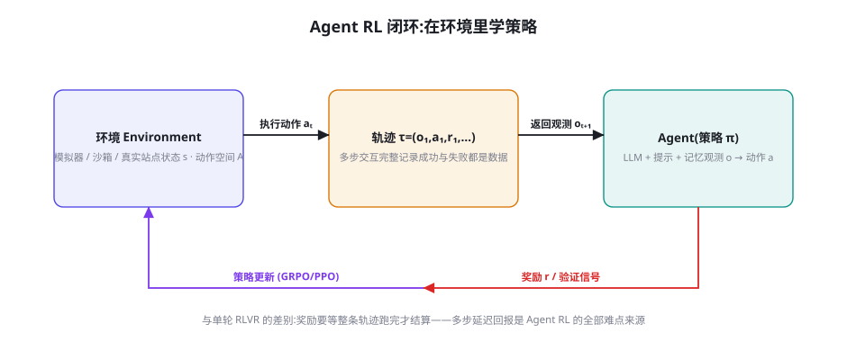
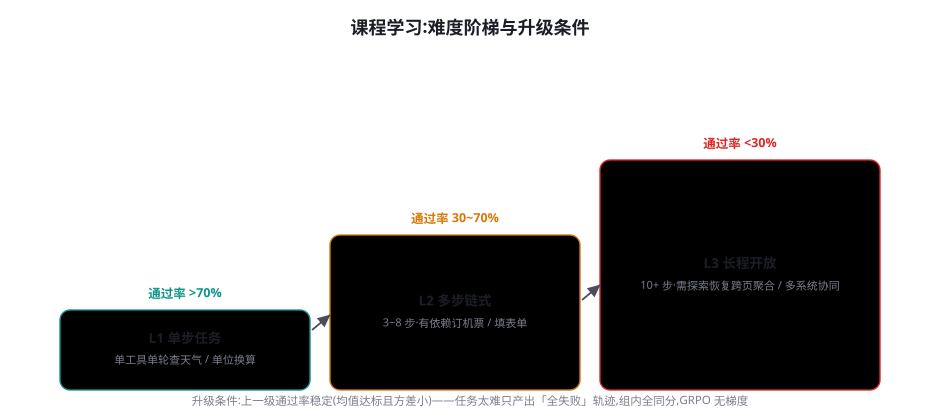
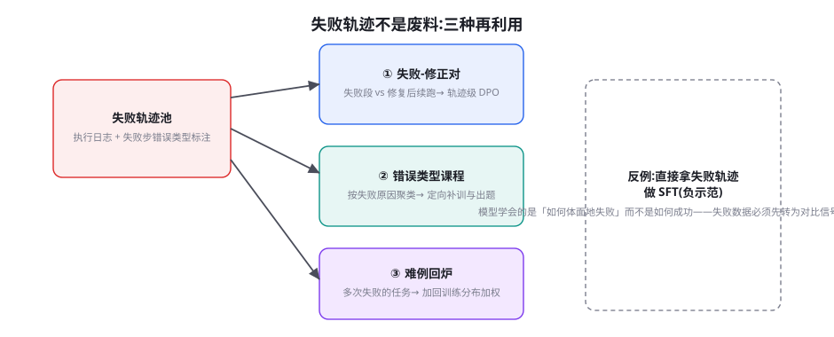

Agent RL：WebRL、AgentGym、AgentTuning 与进化式训练
第 43 章的 RLVR 解决「一道题的答案对不对」，第 44 章的 ToolRL 解决「一次调用对不对」——本章把奖励的结算单位放大到「一个完整任务」：Agent RL。它的全部难点都来自一件事：奖励要等整条轨迹跑完才知道，而轨迹是在环境里跑出来的。于是环境工程、课程设计、失败轨迹的再利用，取代超参数成为成败的关键。本章沿三条代表路线（AgentTuning 的示范冷启动、AgentGym 的环境动物园、WebRL 的自我进化的课程）讲清 Agent RL 的完整打法，并回答落地问题：如何把你的业务环境变成训练场。
Agent RL 难在哪：与单轮 RL 的四个不同

把第 43 章的 RLVR 与本章的 Agent RL 并排看，有四个系统性差异，每个差异都对应一类工程投入：① 信用分配更难——数学题错一步通常整题皆错，而 Agent 任务里「开头绕了远路、结尾还是答对了」很常见，组内相对比较（GRPO）会给整条轨迹同一个分数，噪声大得多。对策是奖励拆分（终点分 + 关键步骤检查点分，第 46 章 PRM 思想）与轨迹级优势估计。② 环境是必需品——推理 RL 一份题目数据集就够了，Agent RL 必须有「能跑起来、能判定成败」的环境：模拟器、沙箱或受控的真实站点。环境的数量与质量直接决定上限。③ 轨迹长且脆——一步工具格式错误就可能让整条轨迹报废（后面全是无效交互），早期训练中这种「格式性阵亡」占比极高，严重稀释有效梯度。对策见本章 45.4 的「两阶段课程」。④ 探索空间是组合爆炸的——每步都有几十种合理动作，十步任务的轨迹空间是天文数字，纯靠采样撞不出好策略，必须用课程（先易后难）与示范（先模仿后超越）压缩探索范围。
第 43 章讲过 RLVR 可以「从基座直接 RL」，DeepSeek-R1-Zero 是招牌证据。但同样的做法搬到 Agent 域早期普遍失败：基座模型连「生成一条格式合法的轨迹」都做不到（忘了闭合调用标签、把工具结果当成自己的话继续说），采样出的轨迹近乎全部失败，GRPO 组内奖励全同分，梯度为零——训练空转。这个现象在强化学习里有名字：探索冷启动问题。Agent 域的解法高度一致：先用少量高质量示范轨迹做 SFT（AgentTuning 的核心主张），让模型先「会说这门语言」，再用 RL 打磨「说得更好」。这与人类学习的次序同构：先临帖、再创作。你可以把它记成一个工程定律：任务越长、格式越严，「先 SFT 后 RL」的必要性越强——数学短推理是例外（格式自由度高），长程 Agent 是常态的极端。
关于「格式性阵亡」多说两句，因为它是早期训练里最容易被误诊的现象。表现为：轨迹在第 1~3 步就因为调用标签未闭合、JSON 引号错误、把工具返回的纯文本当成结构化结果解析而终止——后面无论策略多好都无从施展。诊断方法是把失败轨迹按「死亡步数」做直方图：集中在头部（前 3 步）的是格式问题（解法：轻量 SFT 对协议，AgentGym-RL 的熟悉化阶段，几百条即可）；均匀散布在全程的是策略问题（解法：课程与奖励设计）；集中在尾部的是「放弃」问题——模型在长任务后段开始输出「任务无法完成」式的投降文本（解法：把「中途放弃」记为负奖励，并在课程里加入「前半段已完成、后半段继续」的续跑类任务）。一张死亡直方图，胜过对训练曲线的十次凝视——它是 Agent RL 最重要的单张诊断图。
三条代表路线：AgentTuning、AgentGym、WebRL
| 路线 | 核心主张 | 关键机制 | 历史位置 |
|---|---|---|---|
| AgentTuning（2023） | 示范数据混合训练，唤醒 Agent 能力 | AgentInstruct 轨迹集 + 混合比例 DPO 前身；与通用数据混训防遗忘 | 冷启动范式的确立 |
| AgentGym / AgentGym-RL（2024-2025） | 环境是基础设施：一个动物园 + 统一接口 | 14 类环境统一 HTTP 协议；AgentEvol 自我进化采样；Ray 分来式轨迹生成 | 「训练场」标准化 |
| WebRL（2024-2025） | 任务不够就自己造：自我进化的课程 | 失败任务 → LLM 生成新指令课程；ORM 成功判别器；经验回放池（DPO） | 解决「任务稀缺」的闭环 |
路线一：AgentTuning（Zeng et al. 2023, arXiv:2310.12823）——用示范唤醒能力。它回答的问题是「不 RL，只靠轨迹 SFT 能把 Agent 能力提多少」：构造 AgentInstruct 数据集（Mind2Web、WebShop、ALFWorld 等环境的 GPT-4 交互轨迹，人工筛洗成 1,866 条），与通用 SFT 数据按比例混合微调 Llama 系模型。两个结论至今有效：① 混合比例是生命线——纯 Agent 数据训练会把通用能力训崩（模型变成「只会执行指令的机器」），Agent 数据占比需要压在 20% 以下并保留通用数据共同训练；② 未见环境的泛化是真实存在的——在三个环境上训练的模型，第四个未见环境也有提升，说明轨迹 SFT 教的是「通用执行素养」（读观测、规划、格式化动作）而非环境背题。
路线二：AgentGym（Xi et al. 2024, arXiv:2406.04151；2025 年升级为 AgentGym-RL）——把「环境」做成基础设施。它把 Web 浏览、具身 household（ALFWorld）、文本游戏、科学实验（SciWorld）、数据库（WebArena 子集）等 14 类环境统一到同一套 HTTP 接口后面：任何训练器都能用同一个协议与所有环境对话（observe / act / reset / evaluate）。这个「动物园 + 统一协议」的贡献堪比 gymnasium 之于经典 RL：从此 Agent RL 论文有了共同的实验台，环境可以插拔、结果可以互比。其训练方法 AgentEvol 是一个自我进化循环：在环境里采样轨迹 → 筛出成功轨迹进行为池 → 模型在「行为池反思」后再探索 → 迭代。2025 年的 AgentGym-RL 进一步给出两阶段配方：先 SFT「环境格式熟悉化」（每环境几百条轨迹即可），再 ScaleUp 阶段用 SEER（专门为长程 Agent 设计的 PPO 变体，解决多轮信用分配）做 RL——注意其 SFT 阶段刻意做得很轻（几百条 vs AgentTuning 的上千条），因为现代基座的格式能力已远好于 2023 年，SFT 的角色从「教能力」退到了「对协议」。
路线三：WebRL（Qi et al. 2024, arXiv:2411.02337；清华与智谱）——自我进化的在线课程。它直面 Agent RL 最大的资源瓶颈：合格任务不够。固定任务集有两个死穴：太简单的任务模型很快全对（无梯度）、太难的长期全错（也无梯度），真正产生梯度的「中间难度任务」窗口会随模型变强而不断上移——手工维护任务集永远追不上。WebRL 的解法是一个三组件闭环：① 自我进化的课程——用 LLM 观察失败任务的状态（「模型总在搜索结果第一页就停下」），自动生成针对性的新指令（「请在第三页之后找到信息」），失败越多的地方新任务越密集，课程随模型共同进化；② ORM 成功判别器——训练一个结果奖励模型判断「任务是否真的完成」（网页终态是否满足指令），解决 web 任务「自动判分难」的问题（比规则匹配泛化）；③ 经验回放池（DPO）——同一任务的成功/失败轨迹对进 DPO 池，失败不被丢弃而是转化为对比信号。三组件合起来，把 WebArena 上 Llama-3.1-8B 的成功率从 4.8% 推到 40%+，超越了当时包括 GPT-4 在内的所有方案——这是「数据/课程工程压倒模型规模」的标志性证据。

把「任务通过率 p」与「该任务产生的梯度信号量」画成曲线，会发现信号在 p≈0.2~0.7 的区间最丰富（组内有对有错，相对优势稳定），p→0 与 p→1 时信号趋于零——这个区间就是黄金训练区。课程学习的本质是让任务分布的中心始终追着模型的黄金训练区走：模型变强 → 通过率整体上移 → 需要更难的任务把中心拉回来。三种实现按自动化程度递增：静态分级（人工三档，AgentGym 早期）、难度过滤（每轮训练后按通过率重筛任务）、生成式课程（WebRL：用 LLM 根据失败模式直接生成新任务）。生成式课程是终态——它把「课程设计」从一次性人力工作变成了训练循环的内生环节。这个思想与第 47 章的数据飞轮同构：飞轮解决「数据从哪来」，课程解决「任务从哪来」，都是让稀缺资源在训练循环里自我再生。
失败轨迹的炼金术

Agent RL 的轨迹产出里，失败占绝对多数（早期训练 90%+ 是常态）。把它们当废料扔掉是最昂贵的浪费——失败轨迹携带的信息密度其实高于成功轨迹（成功千篇一律，失败各有各的死法）。三种经过验证的再利用：① 失败-修正对（DPO 主粮）——对失败轨迹，让强模型「从失败点续跑」生成修正轨迹，构成 chosen/rejected 对（第 41 章轨迹级 DPO 的现成原料）；WebRL 的经验回放池是系统化版本。② 错误类型课程——把失败聚类（格式错误/工具误用/规划死循环/过早放弃），每类指向不同的干预：格式错误补 SFT、死循环加探索惩罚、过早放弃造「需要坚持」的任务。失败分析在这里的角色不是「复盘报告」而是「课程输入」。③ 难例加权回炉——反复失败的任务（不同轮次都失败）说明其所在的能力分支薄弱，把同类任务在采样分布中加权（课程上移的微观形式）。
错误一：把失败轨迹直接做 SFT（负示范）。语言模型的模仿学习分不清「示范什么」与「描述什么」——见过失败轨迹的模型不是学会「避免失败」，而是学会「像失败那样行动」（第 39 章成功偏置的反向灾难）。失败数据必须先转化为对比信号（DPO 的 rejected）或课程信号（聚类出题）才有训练价值。错误二：失败轨迹全量保留、不标注死因。回放池里堆积无标注的失败轨迹，会让 DPO 的 rejected 集合内部互相矛盾（一百种死法混在一起，模型学不到「哪种死法最该避免」）。纪律：失败入池前必须打错误类型标签，且 DPO 对的构造要在「同任务、同死因」内配对——对比才有意义。
环境工程：把你的业务变成训练场
三条路线读下来，共同的建设重心浮出水面：环境是 Agent RL 的一等公民。为你的业务域搭建训练环境，五个组件缺一不可：
① 环境模拟层。把真实系统的只读副本或 mock 版暴露为工具（模拟数据库、模拟工单系统）。原则：读操作尽量用真实数据的副本（保真），写操作一律走模拟（安全），副作用（发邮件、付款）用「记录器」替代真实发送。② 任务集。起步 100~500 个任务，按图 45-2 的三档难度分层，每个任务附带终态判据（数据库哪几行变成什么样算完成）。③ 验证器。三层从粗到细：终态断言（查数据库/文件系统状态，最可靠）、轨迹约束（必含/禁含动作，第 44 章的三元约束）、LLM-as-Judge（语义任务的兜底，但要校准，第 57 章）。④ 采样管线。并行跑 N 个环境副本 × 每任务 G 条轨迹，产出轨迹流——这部分的工程形态就是第 35 章的 Agent 运行时加上并发调度。⑤ 监控面板。实时看三个数：各难度档通过率（课程调度的依据）、格式性阵亡率（SFT 需要加强的信号）、平均轨迹长度（异常变长往往是策略退化成「绕圈」的前兆）。
class ToyEnv:
"""把业务系统包成训练环境的五个接口——这是 Agent RL 的全部基建。"""
def reset(self, task_id: str) -> Observation:
"""载入任务: 初始化模拟系统到任务起始状态, 返回首帧观测。"""
...
def step(self, action: Action) -> tuple[Observation, Done]:
"""执行动作: 写操作进模拟层; 返回观测与是否终止。"""
...
def evaluate(self) -> Reward:
"""终局结算: 终态断言 > 轨迹约束 > LLM-Judge 的三层判定。"""
...
def dump_trajectory(self) -> Trajectory:
"""导出带错误类型标注的轨迹, 供回放池与课程生成消费。"""
...
def snapshot(self) -> bytes:
"""状态快照: 支持并行副本与'从失败点续跑'(构造修正对)。"""
...不训练也能体验 Agent RL 的核心机制——「黄金训练区」的存在。取第 22 章 reflection 循环的代码，挑 30 个分三档难度的任务（每档 10 个），让模型每任务跑 8 条轨迹（温度 0.7），统计每档的通过率分布。你会发现：最易档几乎全对（组内同分→GRPO 无梯度）、最难档几乎全错（同样无梯度）、只有中间档产生「组内分化」。然后做 WebRL 式的课程动作：把全对档的任务用 LLM 改写得更难（加约束、加多步依赖），观察通过率是否被「拉回」黄金区。这个下午的实验会让你对「课程为什么必须是动态的」有体感。
把三条路线合并成一个「最小可行的 Agent RL 项目」时间线，供立项参考：第 1~2 周——环境模拟层（五个组件）+ 100 个初始任务（三档 3:5:2）+ 三层验证器；第 3 周——基座模型在环境里跑全量任务基线（不训练），得到死亡直方图与分档通过率，这一步往往已经暴露「格式阵亡占大头」之类的结构性事实；第 4 周——轻量 SFT 对协议（几百到一千条轨迹，来源见第 44 章冷启动配方），目标只有一个：格式性阵亡率压到 5% 以下；第 5 周起——GRPO 正式训练，每轮次后重筛黄金训练区任务、更新课程；失败轨迹入回放池（打错误类型标签），每两周攒出一批失败-修正对做一次 DPO 插入。第 8 周后——通用能力基线回归测试 + 影子环境终测。八周是完整档的最短现实周期，其中前四周的环境与数据工作占掉一半以上——再次呼应：Agent RL 项目里，「训练」只占三成工作量，环境和任务占七成。
自我进化：AgentEvolver 与经验回放
2025 年的一条清晰趋势是把「训练循环里的人工环节」逐个替换为模型的自我环节，合称自我进化（Self-Evolving）。AgentEvolver（2025, arXiv:2511.10295）给出三个自进化机制的组合：自我提问（Self-Questioning）——模型基于已掌握的任务自动生成新任务（WebRL 课程的推广：从「改写失败任务」到「主动出题」）；自我质疑（Self-Doubting）——对成功轨迹做反向审查（「这个成功是策略好还是环境碰巧？」），把「侥幸成功」从行为池里剔除——这是对成功偏置的主动免疫；自我归因（Self-Attributing）——失败轨迹由模型自己生成错误归因报告，归因报告再作为课程生成的输入。三者把课程生成、数据质检、失败分析这三个原本的「人力环节」内生化。它的实证结论与 WebRL 互相印证：进化循环的价值随迭代次数持续增长（不是快速饱和），因为每一轮的新任务分布都建立在新能力之上——能力与任务互为对方的再生资源。
与自我进化相配套的记忆机制是经验回放（Experience Replay）的两层用法：算法层，经典 RL 的回放缓冲打破样本相关性（对 PPO 类算法是稳定器）；数据层，历史成功轨迹池是「行为先验库」——新任务采样时检索相似的历史成功轨迹进提示（第 25 章情景记忆的训练版），等于给探索一个暖启动。两层不冲突：前者服务优化稳定性，后者服务探索效率。
进化的另一面必须诚实面对：遗忘与稳定性。Agent 能力提升时，对话与写作能力可能悄悄退化（第 39 章讲过的多任务冲突在 RL 阶段同样存在，且更隐蔽——评测基线不覆盖就发现不了）。三类已验证的对策：数据层——Agent 任务里混入 15%~25% 的通用数据（AgentTuning 的原始处方，在 RL 阶段以「回放旧任务」的形式延续）；算法层——KL 惩罚锚定参考策略（第 43 章），系数在 Agent 域要给得更大（轨迹长，漂移会累积）；评测层——通用能力基线进入每轮训练的必跑清单（与任务通过率同权重的门禁）。遗忘不是异常，是多目标优化的常态——工程问题是「怎么让退化可见、可回滚」，与第 54 章的评测体系严丝合缝。
落地配方：三种预算下的 Agent RL
| 预算档位 | 可行方案 | 环境/数据投入 | 预期收益 |
|---|---|---|---|
| 最小档（无训练） | 提示 + 检索 + 反思循环（第 21-22 章） | 零 | 基线能力，够覆盖 60% 场景 |
| 轻量档（SFT/DPO） | 生产日志挖轨迹 → 筛洗 SFT；失败-修正对 DPO | 2~4 人周环境模拟 + 数千条轨迹 | 领域执行素养显著提升，格式与策略稳定 |
| 完整档（+RL） | 课程环境 + GRPO/SEER；WebRL 式课程生成 | 1~2 人月环境工程 + 评测闭环 + 多卡数周 | 长程成功率台阶式提升（WebRL 量级） |
资源量级的具体数字（2025 年时的经验值）：8B 模型 Agent RL，256 个并行环境副本、每任务 8 条轨迹、GRPO 更新，单机八卡 A100 一周量级可看到课程第一档饱和；环境模拟层的开发（五个组件齐备）通常 1~2 人月，是整条流水线里人力最重的一段——再次验证本书的反复结论：瓶颈在环境与数据，不在算力。如果你的业务环境本身就有 API 化的测试环境（很多成熟系统有 staging），模拟层的工作量可以砍半——环境工程的投资要趁早，它同时服务于测试、评测与训练三个目的。
三个高频疑问
Q：我该用 PPO 还是 GRPO 跑 Agent RL？两者在 Agent 域都被验证可行，差异没有想象中大：GRPO 免价值网络、显存友好，适合资源紧的团队起步；PPO/SEER 类有显式价值估计，对「长轨迹的步间信用分配」理论上更精细（AgentGym-RL 的 SEER 就是冲着多轮信用分配去的）。实操建议：先用 GRPO 起步（工程简单），遇到「轨迹太长导致组内信号噪声大」的瓶颈再考虑价值基线——瓶颈出现前的算法选型是过早优化。比算法选择重要一个量级的是奖励设计（下一章）与课程质量（本章）。
Q：环境模拟层「失真」会不会让训练白费？会，但失真的容忍度比你想象的高。训练环境与真实环境的差异分两类：表面失真（UI 长得不一样、响应延迟不同）几乎无害——策略学的是行为模式不是像素；结构失真（模拟层里工具永远成功、没有并发冲突、数据分布比真实干净）有害且隐蔽——模型会学到「真实世界不存在的捷径」。对策是失真清单管理：明确列出模拟层与真实的每一条已知差异，其中「结构失真」逐条修复或在评测时重点盯防（第 44 章影子域思想的环境版）。完全的「无失真」既不可能也无必要——追求的是「失真可枚举、可解释」。
Q：直接用真实生产环境做训练环境行不行？不行——除非你的业务对错误的容忍度极高且动作完全可逆。真实环境的三个致命问题：写操作不可逆（训练中的模型会给真实客户发一万封邮件）、并发不可控（流量抖动让奖励信号带噪）、评测不可重复（环境状态漂移让两轮训练的分数不可比）。折中方案是「影子环境」：真实数据的只读副本 + 模拟写层，数据保真度接近真实、副作用被隔离——这是生产团队的标准答案，也是第 54 章评测沙箱的同款架构（一次建设，两处受益）。
本章在全书网络中的连接：上游是第 43 章（RLVR/GRPO——本章的算法底座）、第 44 章（工具训练——单步能力的地基）、第 39 章（SFT——冷启动示范的来源）、第 35 章（Agent 运行时——采样管线的工程形态）；横向与第 47 章（数据飞轮——课程生成是飞轮的任务侧形态）互为镜像；下游通向第 46 章（奖励设计——本章反复出现的「验证器」的深化）、第 49 章（Self-Play——自我进化的博弈论视角）、第 54 章（评测沙箱——影子环境的技术同源）。复习锚点：一张闭环图（45-1）、一张阶梯图（45-2）、三条路线表（45-1 表）、环境五组件清单。
最后补一个与下一章直接相关的悬念式观察：本章默认「任务完成与否」是清晰的（数据库终态、订单状态），但大量真实任务的终态是模糊的（「帮我把这份报告润色得更有说服力」——什么程度算完成？）。这类任务的奖励判定会成为训练质量的天花板：验证器有多准，Agent RL 的上限就有多高。第 46 章的 ORM/PRM 奖励设计，正是把这个「验证器工程」变成一门系统化学问的地方——包括如何训练一个判别器来替代规则、如何防止判别器本身被策略「黑客」。
本章小结
- Agent RL 与单轮 RL 的四个差异：信用分配难、环境必需、轨迹长脆、探索爆炸——每个差异对应一类工程投入。
- 三条路线构成项目清单：AgentTuning（示范冷启动 + 混合防遗忘）→ AgentGym（环境动物园 + 统一协议 + 轻量 SFT 后 RL）→ WebRL（自我进化课程 + ORM 判别 + 经验回放）。
- 课程学习：黄金训练区 p≈0.2~0.7，任务分布要追着模型能力走；生成式课程是终态。
- 失败轨迹三用法：修正对进 DPO、错误聚类成课程、难例加权回炉；失败直接做 SFT 是灾难。
- 环境工程五组件：模拟层、任务集、验证器、采样管线、监控面板——人力投入最重的一段。
自测题
- 你的 Agent RL 训练跑了三轮，大部分任务的组内奖励方差几乎为零。列出至少三个可能的原因与对应的诊断动作。
- 为什么 WebRL 要同时要 ORM 判别器和经验回放池？去掉其中一个，系统会在哪个环节退化？
- 为你的业务设计三档难度的任务阶梯：每档各写两个任务，并给每个任务写出终态判据。
- 「表面失真无害、结构失真有害」——为你的业务环境各举一个例子，并说明如何在评测时暴露结构失真的影响。
参考文献与延伸阅读
- Zeng, A. et al. (2023). AgentTuning: Enabling Generalized Agent Abilities for LLMs. arXiv:2310.12823
- Xi, Z. et al. (2024). AgentGym: Evolving Large Language Model-based Agents Across Diverse Environments. arXiv:2406.04151（2025 升级版 AgentGym-RL 与 SEER 见其项目页 github.com/AGENTGYM/AgentGym）
- Qi, Z. et al. (2024). WebRL: A Self-Evolving Online Curriculum Reinforcement Learning for Language Models. arXiv:2411.02337
- Luo, M. et al. (2025). AgentEvolver: Towards Efficient Self-Evolving Agent System. arXiv:2511.10295
- Chen, A. et al. (2024). Learning to Reason without External Rewards (Intuitor / 自我确定性信号). arXiv:2505.19590（无外部奖励训练的对照视角）
- 配套工程：THUDM/WebRL · WebArena（第 52 章详述的环境基准）